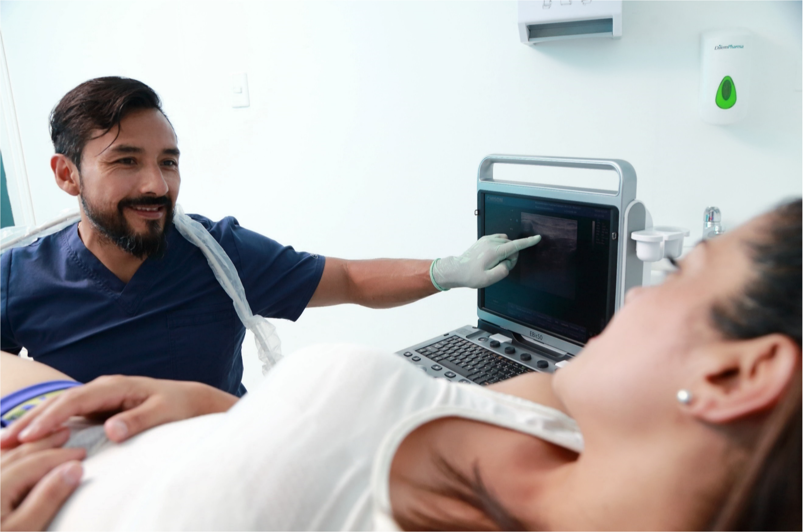

Terapia de Ondas de Choque

La onda de choque es una onda acústica que lleva alta energía a puntos dolorosos y tejidos musculoesqueléticos con condiciones subagudas, subcrónicas y crónicas. Esta energía promueve la curación, regeneración y los procesos de reparación de los tendones y tejidos blandos.
Beneficios de la Terapia de Ondas de Choque:
- Rápido y efectivo alivio del dolor.
- Restablecimiento de la movilidad.
- Tratamiento no invasivo.
- Son necesarias entre tres y cinco sesiones.
- Sin efectos secundarios.
Electrólisis Percutánea Terapéutica Ecoguiada
La electrolisis percutánea terapéutica, es una técnica de fisioterapia invasiva que consiste en la aplicación de corriente continua galvánica a través de una aguja de punción que actúe como electrodo negativo (cátodo), provocando una reacción electroquímica en la región afectada, dicha reacción consiste en la ablación electroquímica no termal y local que induce a la necrosis celular mediante una reacción electrolítica producida por el flujo catódico, lo que va a producir en el tejido blando un proceso inflamatorio local, permitiendo la fagocitosis y la reparación del tejido afectado.
Beneficios de la Electrólisis Percutánea Terapéutica Ecoguiada:
- Reducción del dolor.
- Mejora de la función del tejido.
- Estimulación de la reparación del tejido.
Neuromodulación

La neuromodulación es un método terapéutico que se basa en la estimulación de los nervios periféricos mediante técnicas invasivas o no invasivas para tratar diversos tipos de dolor y condiciones neuromusculares.
Beneficios de la Neuromodulación:
- Alivio de síntomas de dolor crónico.
- Mejora en la función motora.
- Reducción de espasmos musculares.
Láser de Alta Intensidad

El láser de alta intensidad se utiliza en la terapia física para promover la reparación de tejidos y la reducción del dolor a través de la emisión de luz láser de alta potencia.
Beneficios del Láser de Alta Intensidad:
- Reducción del dolor.
- Estimulación de la reparación de tejidos.
- Mejora en la movilidad.
Radiofrecuencia

La radiofrecuencia es una técnica que utiliza ondas electromagnéticas para estimular el tejido profundo, ayudando a reducir el dolor y mejorar la circulación.
Beneficios de la Radiofrecuencia:
- Reducción del dolor muscular.
- Mejora en la circulación sanguínea.
- Estímulo para la regeneración del tejido.
Sistema Super Inductivo (SIS)

El Sistema Super Inductivo es una tecnología avanzada que utiliza campos electromagnéticos para tratar diversas afecciones musculoesqueléticas y promover la recuperación.
Beneficios del Sistema Super Inductivo (SIS):
- Estimulación de la recuperación muscular.
- Reducción de la inflamación.
- Mejora en la movilidad.